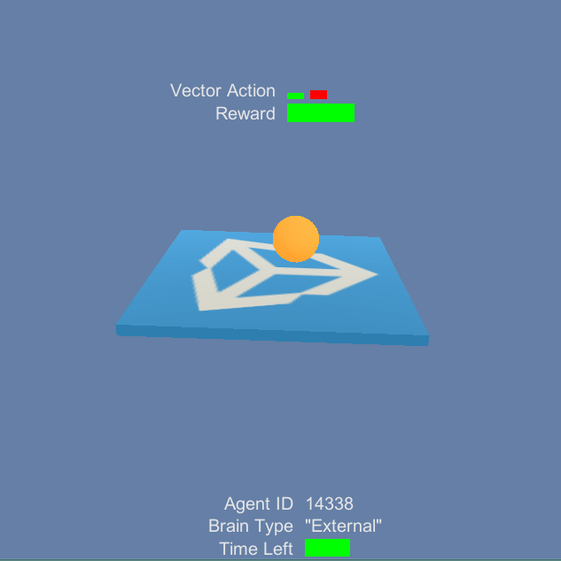

Using the Monitor

The monitor allows visualizing information related to the agents or training process within a Unity scene.
You can track many different things both related and unrelated to the agents themselves. To use the Monitor, call the Log function anywhere in your code :
Monitor.Log(key, value, displayType , target)
keyis the name of the information you want to display.valueis the information you want to display.displayTypeis a MonitorType that can be eithertext,slider,barorhist.textwill convertvalueinto a string and display it. It can be useful for displaying error messages!slideris used to display a single float between -1 and 1. Note that value must be a float if you want to use a slider. If the value is positive, the slider will be green, if the value is negative, the slider will be red.histis used to display multiple floats. Note that value must be a list or array of floats. The Histogram will be a sequence of vertical sliders.baris used to see the proportions. Note that value must be a list or array of positive floats. For each float in values, a rectangle of width of value divided by the sum of all values will be show. It is best for visualizing values that sum to 1.
targetis the transform to which you want to attach information. If the transform isnullthe information will be attached to the global monitor.